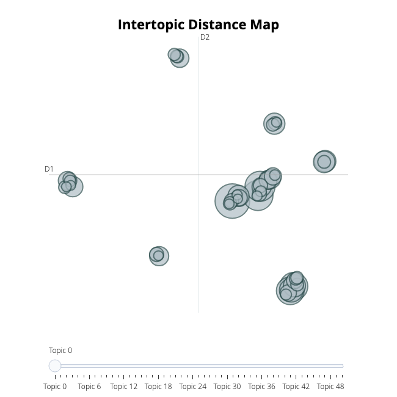
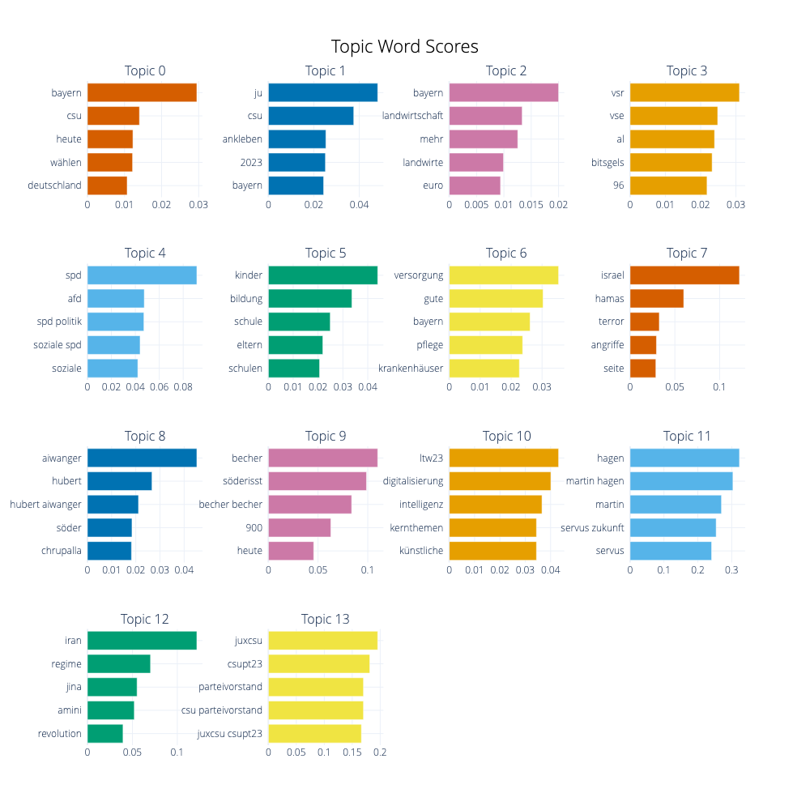

[nltk_data] Downloading package stopwords to /root/nltk_data...
[nltk_data] Unzipping corpora/stopwords.zip.
In [11]:
from sklearn.feature_extraction.text import CountVectorizervectorizer_model = CountVectorizer(ngram_range=(1, 2), stop_words=STOPWORDS)
Now we’re ready to create our corpus in docs, a list of text documents to pass to BERTopic.
In [4]:
# We create our corpusdocs = df['Text']
In [30]:
from bertopic import BERTopic# We're dealing with German texts, therefore we choose 'multilingual'. When dealing with English texts exclusively, choose 'english'topic_model = BERTopic(language="multilingual", calculate_probabilities=True, verbose=True, vectorizer_model=vectorizer_model)topics, probs = topic_model.fit_transform(docs)
The following cells have been copied from the BERTopic Tutorial. Please check the linked notebook for more functions and the documentation for more background information.
Extracting Topics
After fitting our model, we can start by looking at the results. Typically, we look at the most frequent topics first as they best represent the collection of documents.
In [31]:
freq = topic_model.get_topic_info(); freq.head(5)
Topic
Count
Name
Representation
Representative_Docs
0
-1
860
-1_bayern_csu_uhr_mehr
[bayern, csu, uhr, mehr, menschen, münchen, te...
[Wir gehen mit #herzstatthetze in den Wahlkamp...
1
0
137
0_wählen_fdp_hessen_heute
[wählen, fdp, hessen, heute, stimme, stimmen, ...
[Unser Ministerpräsident @markus.soeder steigt...
2
1
104
1_energie_co2_klimaschutz_habeck
[energie, co2, klimaschutz, habeck, wasserstof...
[Habeck täuscht Öffentlichkeit mit Zensur: Rüc...
3
2
103
2_zuwanderung_migration_grenzpolizei_migration...
[zuwanderung, migration, grenzpolizei, migrati...
[Wir sagen Ja zu #Hilfe und #Arbeitsmigration,...
4
3
89
3_uhr_starke mitte_bayerns starke_bayerns
[uhr, starke mitte, bayerns starke, bayerns, b...
["Deutschland-Pakt" aus Scholz der Krise komme...
-1 refers to all outliers and should typically be ignored. Next, let’s take a look at a frequent topic that were generated:
In [32]:
len(freq)
52
We have a total of 52 topics
In [33]:
topic_model.get_topic(0) # Select the most frequent topic
After having trained our BERTopic model, we can iteratively go through perhaps a hundred topic to get a good understanding of the topics that were extract. However, that takes quite some time and lacks a global representation. Instead, we can visualize the topics that were generated in a way very similar to LDAvis:
In [10]:
topic_model.visualize_topics()

Visualize Terms
We can visualize the selected terms for a few topics by creating bar charts out of the c-TF-IDF scores for each topic representation. Insights can be gained from the relative c-TF-IDF scores between and within topics. Moreover, you can easily compare topic representations to each other.
In [13]:
topic_model.visualize_barchart(top_n_topics=15)
Topic Reduction
We can also reduce the number of topics after having trained a BERTopic model. The advantage of doing so, is that you can decide the number of topics after knowing how many are actually created. It is difficult to predict before training your model how many topics that are in your documents and how many will be extracted. Instead, we can decide afterwards how many topics seems realistic:
In [36]:
topic_model.reduce_topics(docs, nr_topics=15)
2023-12-01 08:53:07,148 - BERTopic - Topic reduction - Reducing number of topics
2023-12-01 08:53:07,642 - BERTopic - Topic reduction - Reduced number of topics from 52 to 15
<bertopic._bertopic.BERTopic at 0x794041658ca0>
Visualize Terms After Reduction
In [17]:
topic_model.visualize_barchart(top_n_topics=15)

Saving the model
The model and its internal settings can easily be saved. Note that the documents and embeddings will not be saved. However, UMAP and HDBSCAN will be saved.
In [38]:
# Save modeltopic_model.save("/content/drive/MyDrive/2023-12-01-LTW23-CrowdTangle-Posts-model")
2023-12-01 08:53:54,135 - BERTopic - WARNING: When you use `pickle` to save/load a BERTopic model,please make sure that the environments in which you saveand load the model are **exactly** the same. The version of BERTopic,its dependencies, and python need to remain the same.